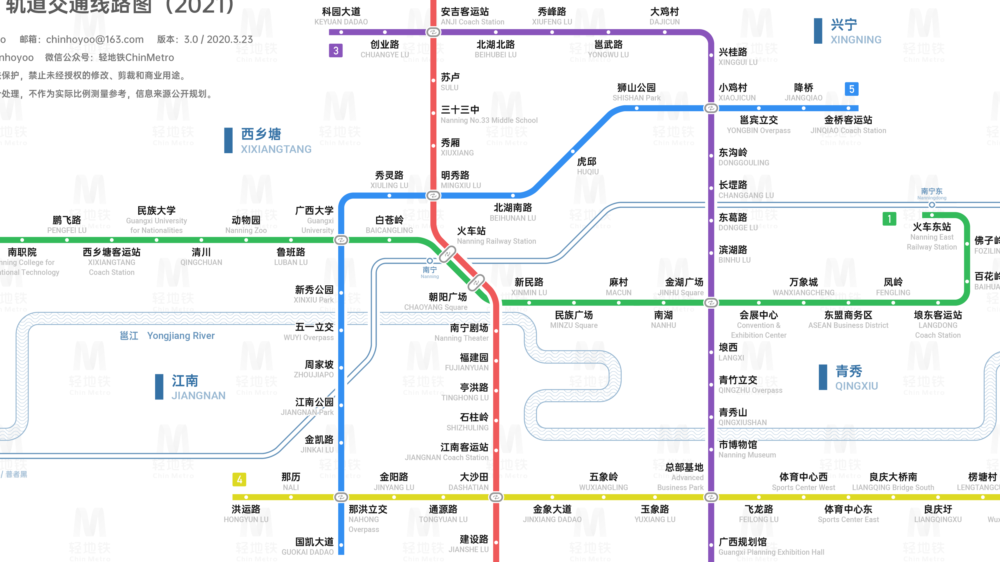

南宁地铁目前开通了5条线路，覆盖了城市主要区域。地铁运营时间一般为6:30-23:00， 票价2-7元不等，支持现金购票、市民卡、二维码扫码等多种支付方式。
地铁线路
- 1号线：石埠 ↔ 火车东站 (全长32.1km)
- 2号线：西津 ↔ 坛泽 (全长27.5km)
- 3号线：科园大道 ↔ 平良立交 (全长27.9km)
- 4号线：洪运路 ↔ 楞塘村 (全长20.7km)
- 5号线：国凯大道 ↔ 金桥客运站 (全长20.2km)
运营时间
- 工作日：6:30 - 23:00
- 周末及节假日：6:30 - 23:30
- 高峰时段：7:30-9:30, 17:30-19:30
- 发车间隔：高峰期约5分钟，平峰期约7-10分钟
南宁地铁线路图

点击放大/缩小按钮查看地铁线路详情